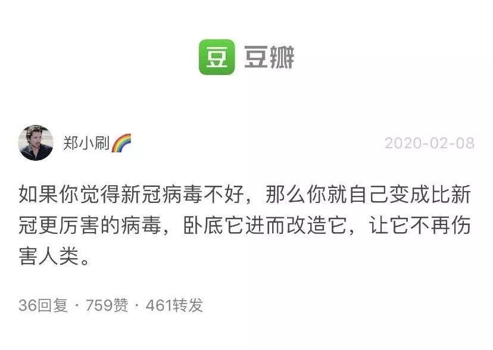

当下即历史：没有反转
原文链接 备份链接 2020年2月7日。 农历正月十四。 武汉封城第十六天。 天门封城第十五天。 我迟迟不敢回复你，因为据我了解的信息和过往的经验看，所谓抢救，多半只是为了烟雾舆论的手段而已。我并非不相信奇迹，而是被现实打脸的次数太多。经 …

2020年2月8日。
农历正月十五，元宵节。
武汉封城第十七天。
天门封城第十六天。
两天没见五四兄动态了，昨晚看到一张李文亮医生的照片，十分神似瘦版的他，就想发给他看看，顺便问他最近有没有更文。哪知消息一发过去被弹回来：对方账号异常，已被限制登录。这，还不是最尴尬的。想到为数不多的几个共同好友，就跟李红豪也发了个消息，问有没有五四兄的新号：嘣地又给弹回来，对方…我简直无fuck说了！前方阵地倒下了一片，后方领土居然也哀鸿遍野。我突然意识到，我们同时面临着两场战争！而且敌人都特么看不见摸不着，却又无时无处不在。病从口入，生物病毒好歹可以口罩抵御；祸从口出，这因言封号训诫的祸，可该如何治好？
那有人多嘴了，号没了再申请呗，几大个事叽叽歪歪。那我就来谈谈我的经历。两个微博都被封号之后，我至今没再注册。记录成长的QQ空间已设为自己可见，泡了12年的豆瓣也只用来记录书影音。这个公号从16年到现在，初衷只是延续一个“文艺青年”在空间记录的习惯，用以自嗨和凭吊的角落。我想说的是，在日渐虚拟的年代，这些二进制符号，方才是一个人生活过的全部证据。所以在我看来，被封号无异于被谋杀。病毒带走了李医生的肉体，但如果不是通过翻他微博，我们又如何能感同身受他也是和我们一样普通又可爱的人呢？
我已经死过两次了。讲真，这个号我很用心，我也不想再出事。但我真正怕的并不是被谋杀，而是刻意伪装过分小心而变得言不由衷犬儒苟且——这正是染上这个病毒的症状。所以我十分佩服这两天视死如归的勇士们，他们的牺牲是为李医生肉体受难最光荣的加冕！
当然，我也知道，这场艰卓的战斗，才刚刚吹响号角。


水妈
长按二维码向我转账
受苹果公司新规定影响，微信 iOS 版的赞赏功能被关闭，可通过二维码转账支持公众号。
文章已于修改
原文链接 备份链接 2020年2月7日。 农历正月十四。 武汉封城第十六天。 天门封城第十五天。 我迟迟不敢回复你，因为据我了解的信息和过往的经验看，所谓抢救，多半只是为了烟雾舆论的手段而已。我并非不相信奇迹，而是被现实打脸的次数太多。经 …
原文链接 备份链接 2020年2月6日。 农历正月十三。 武汉封城第十五天。 天门封城第十四天。 闹哄之后，豆瓣日记今天被暂停使用了。这个消息居然在豆瓣引发了斯德哥尔摩综合症般的辩论。世风日下，文青们都被训练得在大是大非面前排队站位了。豆 …
原文链接 备份链接 （期待你明天的乱炖） 2020年2月5日。 农历正月十二。 武汉封城第十四天。 天门封城第十三天。 按这个新冠病毒14天的潜伏期上限算，今天我们终于可以嘘口气，以示自己解除隐患了。上午还跟伯伯说，我们要不要喝点酒庆祝一 …
原文链接 备份链接 2020年2月4日。 农历正月十一。 武汉封城第十三天。 天门封城第十二天。 今天报道一名叫何辉的武汉医护接送车队志愿者染病身故的消息，几经辟谣，仍未反转——志愿者何辉终是走了，只不过不是网传照片上的那位。他是英雄吗？ …
原文链接 备份链接 2020年2月3日。 农历正月初十。 武汉封城第十二天。 天门封城第十一天。 昨天文章莫名其妙就被404了。开工首日，网监果然上班了。我当然无fuck说。好今天不谈疫情。仍在焦虑中困去，大清早还画了个地图，本来就没衣服 …